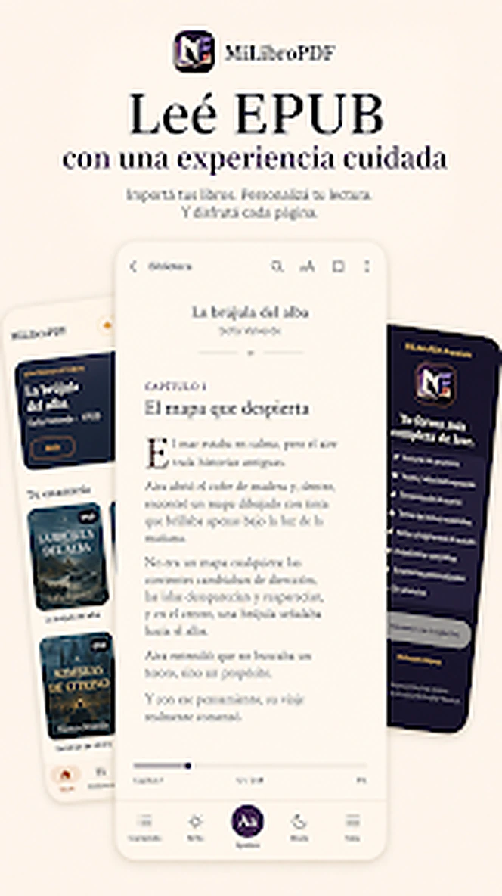

Apps Android
Interfaces reales de productos móviles desarrollados y probados en dispositivos.
Ver servicio →Páginas web, apps Android, extensiones y automatizaciones creadas para negocios y proyectos que necesitan algo funcional, claro y listo para usar.
Esta versión usa capturas y vistas reales de proyectos ya construidos por Zenix AR.
Interfaces reales de productos móviles desarrollados y probados en dispositivos.
Ver servicio →
Software que vive dentro del navegador y resuelve tareas concretas.
Ver servicio →Diseño, contacto, navegación y publicación real; no solo una maqueta visual.
Ver servicio →Primero entendemos qué hay que resolver. Después diseñamos, construimos y validamos sobre algo que realmente se puede usar.

La prioridad es que funcione en condiciones reales, no que se vea bien solo en una captura.

Cada función responde a una necesidad específica y se prueba antes de avanzar.

Construimos pensando en correcciones, nuevas funciones y futuras versiones.
Con entender la necesidad alcanza para empezar.